Description of the model¶
(MM, A)limepy: (Multi-Mass, Anisotropic) Lowered Isothermal Model Explorer in Python¶
Isotropic models¶
The isotropic distribution functions are defined as (Gomez-Leyton & Velazquez 2014)
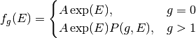
where 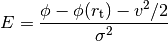,  is a velocity scale, 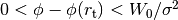 is the (positive) potential and 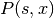 is the
regularised lower incomplete gamma function 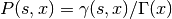. For some integer values of g several well
known models are found
is a velocity scale, 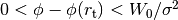 is the (positive) potential and 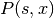 is the
regularised lower incomplete gamma function 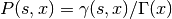. For some integer values of g several well
known models are found
- g = 0 : Woolley (1954)
- g = 1 : King (1966)
- g = 2 : Wilson (1975)
Anisotropic models¶
Radial anisotropy a la Michie (1963) can be included as follows
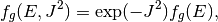
where 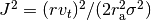, here 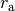 is the user-defined anisotropy radius.
Multi-mass model¶
Multi-mass models are found by summing the DFs of individual mass components and adopting for each component (following Gunn & Griffin (1979))
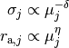
where 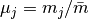 and 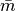 is the central density weighted mean mass.